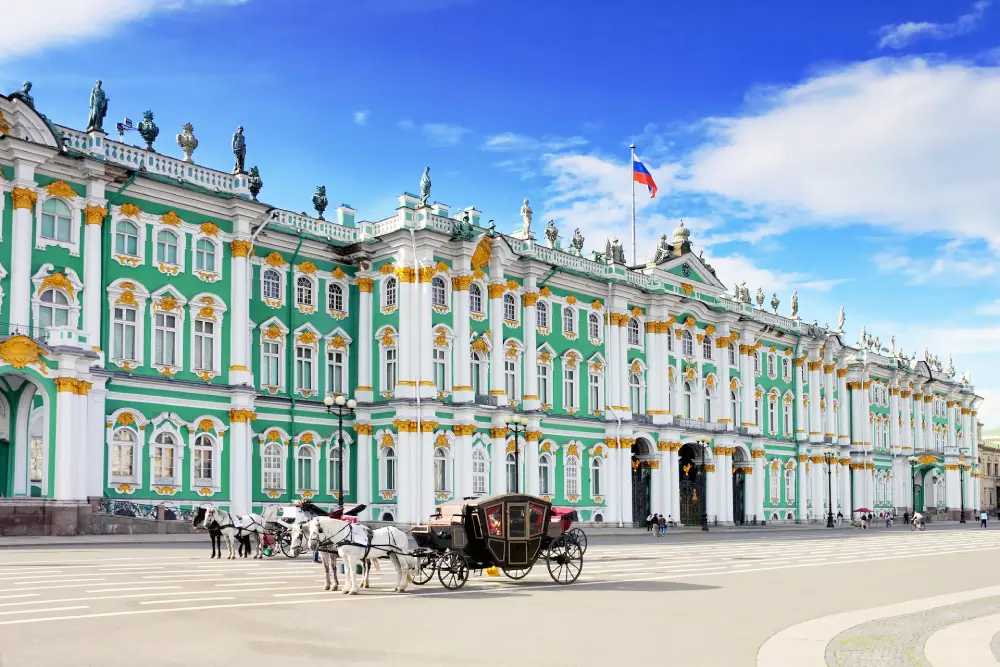

Санкт-Петербург — второй по величине город России, основанный в 1703 году Петром I. Он расположен на северо-западе страны в устье реки Невы у побережья Финского залива. Это важнейший экономический, туристический, научный и культурный центр, который часто называют «Культурной столицей» или «Северной Венецией».
Основые фактыДополнительная информация по ссылке экономические иследования
Пик туристического интереса к Санкт-Петербургу традиционно приходится на период «Белых ночей», который длится с конца мая по середину июля. В это время гостей города особенно привлекают знаменитые разводные мосты, живописные набережные и уникальная историческая застройка. Помимо классических пешеходных экскурсий, город активно развивается как центр водного туризма, предлагая прогулки по рекам и каналам, а также принимая крупные круизные лайнеры. Высокий туристический спрос полностью обеспечивает развитая городская инфраструктура, включающая обширную сеть современных отелей, хостелов, аутентичных ресторанов и кафе под любой бюджет.
Дворец
Исторический центр Санкт-Петербурга целиком признан объектом всемирного наследия ЮНЕСКО, что подчеркивает уникальность городской среды. Культурная жизнь Северной столицы неразрывно связана с ее великими музеями, среди которых мировую известность завоевали Эрмитаж, Русский музей и старейшая Кунсткамера. Театральные традиции города представляют знаменитые на весь мир Мариинский, Михайловский и Александринский театры. Культурный облик города гармонично дополняют ежегодные масштабные события, визитной карточкой которых стали грандиозный праздник выпускников «Алые паруса» и торжества в честь Дня города.